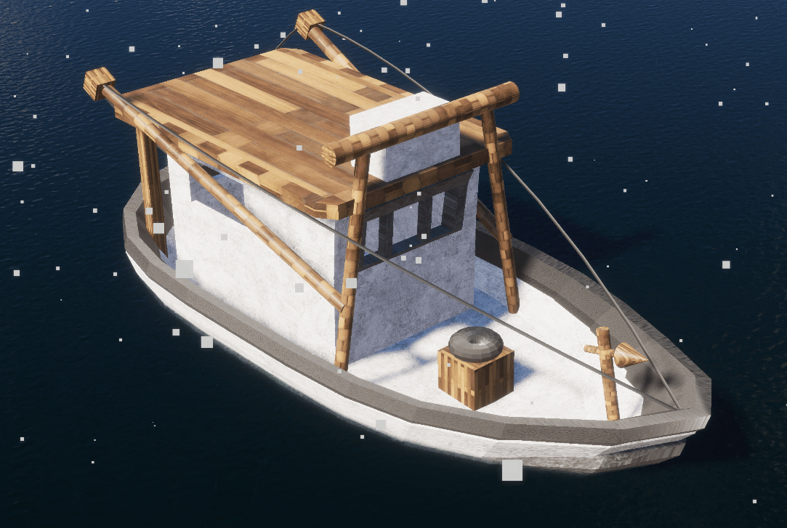

Point Sprite Tutorial (github)
This tutorial was developed as the final honors portfolio for my graphics course. It explains the benefits of point sprites, how to use them, and interesting applications. It’s deployed at https://cs559-spring25-ah.github.io/portfolio-4-ArenKDesai/.
Boat (github)
This boat was designed in Blender and modeled in Unity, using the High-Definition Rendering Pipeline (HDRP). Here’s a screenshot:
